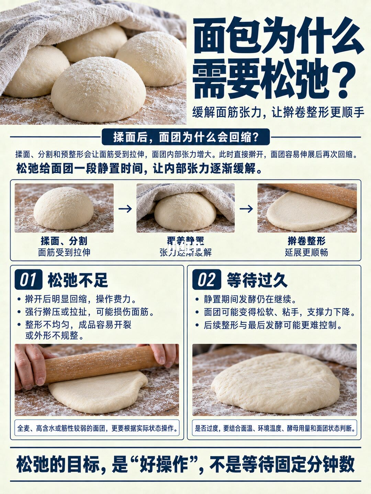
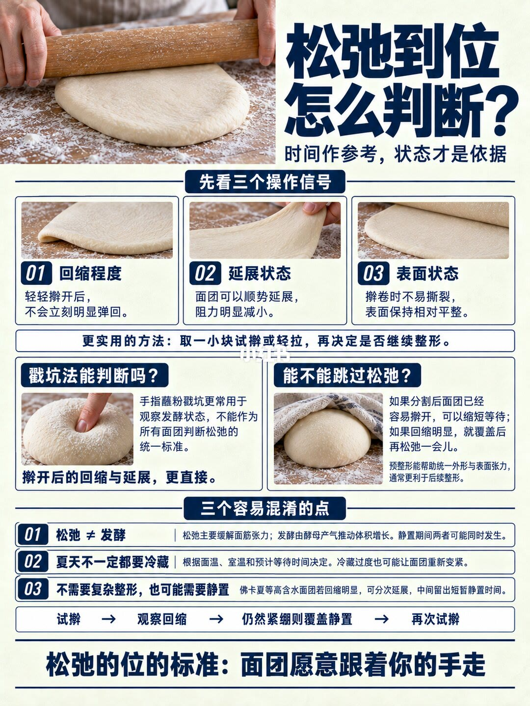

图文实录 · 小红书 · 甘那许烘焙模具
面包松弛这步可以跳过吗
可以缩短，不宜在面团还明显回缩时直接硬擀。图上的标准是面团肯跟着擀开，不是等满固定分钟，也不是用戳坑回弹当统一答案。
1/2
松弛是为了好操作
这一页的标题是「面包为什么需要松弛？」，副题是「缓解面筋张力，让擀卷整形更顺手」。正文写：揉面、分割和预整形会让面筋受到拉伸，面团内部张力增大；这时直接擀开，面团容易伸展后又回缩。松弛是给一段静置，让内部张力慢慢缓下来。
下面三格示意里，左格能读清的是「揉面、分割」和「面筋受到拉伸」，右格是「擀卷整形」和「延展更顺畅」。中间那格的小标题看不清，无法确认。
对比分两栏。松弛不足：擀开后明显回缩、操作费力；强行擀压或拉扯可能损伤面筋；整形不均匀，成品容易开裂或外形不规整。旁注写全麦、高含水或筋性较弱的面团，更要按实际状态操作。等待过久：静置期间发酵仍在继续；面团可能变得松软、粘手，支撑力下降；后续整形和最后发酵可能更难控制。是否过度，要结合面温、环境温度、酵母用量和面团状态。页底一句：松弛的目标是「好操作」，不是等待固定分钟数。
说明文字里还有图上没有的具体后果：松弛不够会在吐司盒里从中间断开，或烘烤时变成「爆炸头」，全麦吐司基本长不起来；松弛过度则最后发酵发不起来。这些句子以说明为准时要标成补充，图上只写到回缩、可能伤筋、开裂或不规整，以及过久后松软粘手、更难控制。说明还把「蘸粉戳坑、坑缓慢回弹大约三分之一」写成判断松弛的标准，这和下一页冲突，以图为准。

2/2
看回缩，不把戳坑当统一标准
标题是「松弛到位怎么判断？」，副题是「时间作参考，状态才是依据」。三个操作信号：轻轻擀开后不会立刻明显弹回；面团可以顺势延展，阻力明显减小；擀卷时不易撕裂，表面保持相对平整。更实用的做法写在图上：取一小块试擀或轻拉，再决定要不要继续整形。
左栏问戳坑法能不能判断松弛。图上的回答是：手指蘸粉戳坑更常用来观察发酵状态，不能当作所有面团判断松弛的统一标准；擀开后的回缩和延展更直接。这和说明里「回弹大约三分之一就是松弛到位」相反，冲突处以这一页为准。
右栏问能不能跳过。图上写：分割后面团已经容易擀开，可以缩短等待；回缩明显，就覆盖后再松弛一会儿。预整形能帮助统一外形和表面张力，通常更利于后续整形。说明里还写基础发酵后直接分割整形，和收圆松弛再整形，烤出来的外观和组织区别其实不大，但不做松弛时外形和紧实度会差一些。后半句图上没有写成「区别不大」，只强调回缩明显就不要跳，以及预整形有利于后面整形。
三个容易混的点。第一，松弛主要缓解面筋张力，发酵是酵母产气把体积撑大，静置时两件事可能同时发生。第二，夏天不一定都要冷藏，按面温、室温和预计等待时间决定，冷藏过度也可能让面团重新变紧。第三，不做复杂整形也可能需要静置；举例的面包名看不清，无法确认，后半句清楚：高含水面团若回缩明显，可分次延展，中间留出短暂静置。页底流程是：试擀，观察回缩，仍然紧绷则覆盖静置，再次试擀。标准句是：面团愿意跟着你的手走。

汇总
先试擀，再决定等不等
结论：松弛这步可以缩短，但不能在明显回缩时硬跳。判断看试擀后的回缩、延展和表面是否好擀（2/2），目标是好操作而不是固定分钟（1/2）。边界：这是这篇笔记的操作观点，不是所有面粉、水量和室温下的通则；全麦、高含水、筋性弱的面团，图上要求按状态而不是按表（1/2）。说明里的戳坑回弹三分之一、吐司从中断开和爆炸头，都没有写在图上，戳坑标准还和 2/2 冲突。